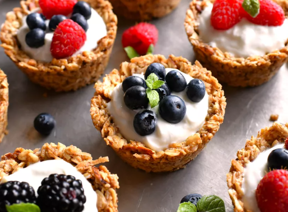

Granola Cups

A picture of Granola Cups
These are a quick grab-and-go breakfast option
Ingredients Needed
1/4 cup of unsalted butter
1/2 cup of pure maple syrup
1 teaspoon of vanilla extract
1/2 teaspoon of ground cinnamon
1/4 teaspoon of salt, or to taste
1/4 teaspoon of ground nutmeg
1/2 cup of sliced almonds
1/2 cup of sweetened flaked coconut
2 tablespoons of flax meal
Nonstick baking spray with flour
1 cup of plain whole milk greek yogurt, Or as needed
1 cup of fresh berries, or as needed
Directions
Step 1: Place butter and maple syrup in a large bowl and place into the microwave. Heat in 30 second intervals, stirring after every 30 seconds, until butter is melted, about 1 to 1 1/2 minutes. Remove bowl from microwave and add in vanilla, cinnamon, salt and nutmeg. Stir until thoroughly combined. Add in your oats, almonds coconut and flax meal. Stir until mixture is thoroughly combined.
Step 2: Generously grease a standard muffin tin with nonstick baking spray with flower
Step 3: Divide oat mixture evenly between the muffin cups, about 2 heaped tablespoons per cup. With wet hands, press the mixture into the bottom and up the sides of each cup. Place the pan into the fridge to chill for 15 minutes.
Step 4: Preheat the oven to 350 degrees F (175 C)
Step 5: Bake chilled granola cups in the preheated oven until the outside edges of the cups turn golden brown, 25 to 30 minutes. Remove the cups from the oven, cool to room tempature in the pan. About 30 minutes.
Step 6: Use an offset spatula or butter knife to pop them out of the pan. To serve, Fill each granola cup with yogurt and top with berries. Serve immediately.